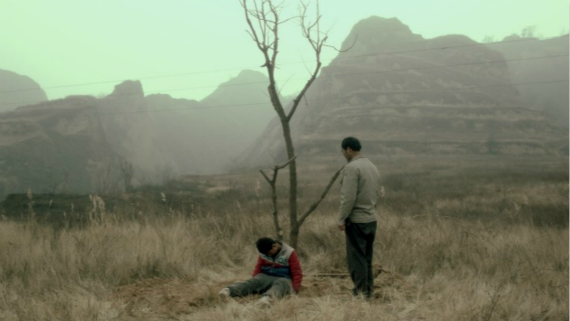

中国
电影《枝繁叶茂》由贾樟柯监制，是贾樟柯发起的“添翼计划”所推出的第七部作品。今年2月在柏林首映，4月在香港举行了亚洲首映，并收到众多世界知名电影节的邀请。这部由张撼依编剧、导演的小成本电影聚焦中国农村，灵感来源于张撼依童年时代在故乡陕西听到的乡野传说：因为工厂扩建，有个农村要彻底搬迁；于是一个死去10年的母亲，在一个冬天，还魂在儿子的身上，和丈夫一起把家门口的一棵树（母亲当年的嫁妆）移植到一个无人惊扰的小山谷里。
结合今天中国农村的现实，这个电影有着单纯而残忍的魔幻现实主义剧情。镜头所到之处，我们看到的是尘土飞扬的乡间车道，浓烟滚滚的工厂，断砖残瓦的老屋。尽管色调隐忍又克制，但是冬日农村的萧条景象仍让人觉得惨不忍睹。
如果这么看的话，东西方只是一个地理概念，把它变成政治概念以后，我们会说西方国家怎么样，东方国家怎么样，是这么一回事吗？我想不完全是，这需要我们开拓思路。再说南北，中国是一个南方国家吗？地理上肯定不是。因为北回归线是在台湾那边划过来的，但是中国又跟泛指发展中国家的“南方国家”比较相近。中国发展的速度比其他国家快，逐渐会变成发达国家。我们真的想当发达国家是没错的，但又不是西方式的发达国家，甚至我们不喜欢说中国是发达国家，这里面有很多值得思考的地方
还魂在儿子身上的母亲名叫“秀英”——一个普通的北方民妇的名字，死后10年，没有转世，只因为有心愿未了，那个小小的心愿只是保护她的那颗无名树。张撼依对这个角色赋予了普遍化的意义，在他看来，普遍的农村人、尤其是妇女，一辈子活得逆来顺受、隐忍将就，也说不清楚带有多少遗憾离开世界。电影里秀英转世之后来到村子的时候，对她母亲说：“妈，我回来了。”她得到的不是惊喜的拥抱，而是母亲的冷淡和埋怨；当时适逢亲人的孩子做满月酒，人人忙着庆贺生者，而顾不上理睬死者。农村的凋敝，不只是景观，更是情感和人心；还有那与之相关的整套传统社会规范逐渐被瓦解、进而毁灭。
影片结束之前，丈夫和妻子将树移走，三两个穿着古代服饰的鬼魂正牵着马东张西望，这是这部沉重题材中为数不多的幽默的部分——他们已经游荡了千年了吧？这很容易让人想到这个国家有很多事情都正处在这样一种游荡悬浮的状态——城市化让农民失去了故乡，也没有建立起明确的未来
在访谈张撼依的过程中，张撼依反复提及农村凋敝的原因有两个，那就是：1、城市化的扩张；2、（年轻）人口的迁移。其实大可以挖掘得更深一点。中国农村发展的春天90年代中后期中止，此后，城乡差距飞速扩大，资源与财富风暴一般向行政中心聚集，城乡二元结构愈加恶化。随后越来越多的农民涌入沿海城市的工厂里，也有越来越多的工厂在城乡交界处修建了起来。它们迅速抽干了湖泊，污染了河水和空气。中国广播网在2013年8月9日的一篇题为《城镇化阵痛与担忧》的报道中援引中国官方统计数据显示：自2000年到2010年，中国有90万个村子消失，平均每天有将近250个自然村落消失。还有数据估计，截止2014年，中国有超过450个癌症村。据《学周刊》报道，30年来，农村的离婚率提高了四倍；农村的自杀率是城市的三倍。
这些数据触目惊心，中国城市化扩张过程中的资源掠夺，持续数十年的政策失衡以及政府的漠不关心，将农村发展的空间挤压得油尽灯枯。今日农村的千疮百孔的命运早在90年代都已经奠定。 电影中有个长达两分钟的杀羊的长镜头。在农村，这是一种炫技的表演，杀死一只健壮的羊却不流一滴血；在电影里，这却是一个有象征意义的场景，因为农村在衰亡的过程中，到处充满暴力和残忍，只是我们没有看到鲜血。